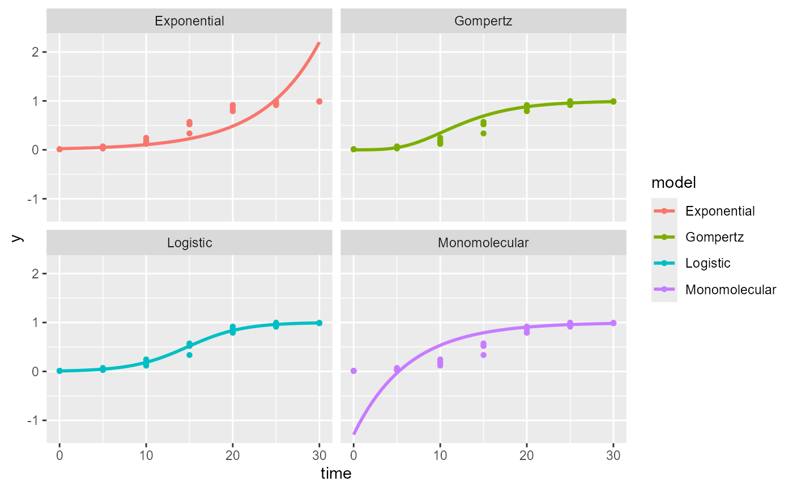
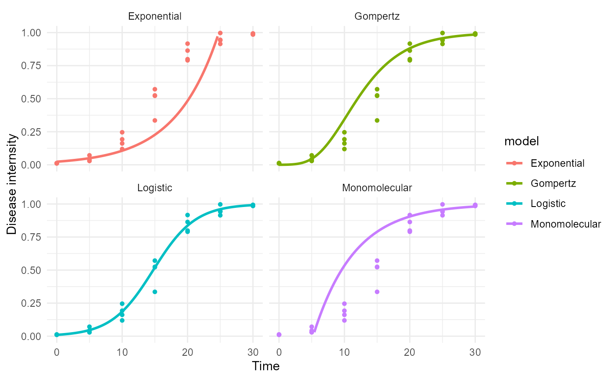

Creates a plot panel for the fitted models
plot_fit.RdCreate a ggplot2-style plot with the fitted models curves and the epidemic data.
Usage
plot_fit(object,
point_size =1.2,
line_size = 1,
models = c("Exponential","Monomolecular", "Logistic", "Gompertz"))Examples
epi1 <- sim_logistic(N = 30,
y0 = 0.01,
dt = 5,
r = 0.3,
alpha = 0.5,
n = 4)
data = data.frame(time = epi1[,2], y = epi1[,4])
fitted = fit_lin( time = data$time, y = data$y)
plot_fit(fitted)

# adding ggplot components
library(ggplot2)
plot_fit(fitted)+
theme_minimal()+
ylim(0,1)+
labs(y = "Disease internsity", x = "Time")
#> Warning: Removed 18 rows containing missing values or values outside the scale range
#> (`geom_line()`).
#> Warning: Removed 18 rows containing missing values or values outside the scale range
#> (`geom_line()`).
